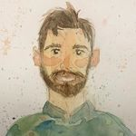

Tim Alamenciak
Biodiversity Restoration & Conservation
Knowledge Systems
Community Engagement
PhD, Social and Ecological Sustainability, University of Waterloo (2024)
· Postdoctoral Fellow, Carleton University
· Adjunct Assistant Professor, University of Waterloo
· Research Fellow, St. Jerome’s University
· English / French (B2)
I study biodiversity restoration and conservation, focusing on building evidence for good decisions and mobilizing evidence with practitioners who can use it. I build the tools and partnerships that close the distance between research and practice. My work spans from the
Canadian prairies, where I model what happens to land after a conservation contract expires,
to the knowledge graphs that make scattered ecological evidence usable, to the neighbourhood
groups whose volunteers do a significant portion of the restoration in this country.
Guiding questions
My research across three interconnected areas has been supported by
$607,000 in awarded research funding as PI or co-PI across
11 competitions. See Research for details.
Recent & upcoming
- Nov 2026 Organizing Evidence Jam, an AI & ecology hackathon at St. Jerome’s University.
- Oct 2026 Co-organizing the Ontario Ecological Restoration Conference at the University of Waterloo.
- Sep 2026 Co-organizing Integrative Social-Ecological Knowledge Systems, a workshop in Jena, Germany (28 Sept – 1 Oct).
- 2026 Talk: Causal Mosaic Schema at TDWG 2026; AI and decision support tools for land trusts at the Ontario Land Trust Alliance conference.
- 2026 Awarded an NVIDIA Academic Grant (PI) and an ESIIL working group for CMSMapper (co-PI).
- 2026 Papers out in Environmental Evidence, Socio-Ecological Practice Research and Conservation Science and Practice.
Publications
Featured publications
Featured
-
2026 — Tim Alamenciak, Nancy Shackelford, Logan Rehberg, Ash Baron, Steven D. Murphy, Eric Higgs, Tina Heger, Alina Fisher, Bruno Travassos-Britto, Ryan Stephenson.
Identifying practitioner and researcher collaboration needs to improve ecosystem restoration in Canada
(pdf)
Socio-Ecological Practice Research.
-
2025 — Tim Alamenciak, Elise Gornish, Stephen D. Murphy.
Dimensions of Effective Volunteer Restoration Techniques in North America
(pdf)
Listen
Restoration Ecology.
-
2025 — Tim Alamenciak, Carlos Alberto Arnillas, J. Harry Caufield, Katherine Compton, Kian Drew, Robert Fruehstueckl, Tina Heger, Birgitta Konig-Ries, Chris Mungall, Sierra Moxon, Justin Reese, Jordan Tardif, Lars Vogt.
Ecolink: Towards a Knowledge Graph Schema for Complex Environmental Systems
(pdf)
New Trends in Theory and Practice of Digital Libraries.
Peer-reviewed
-
2026 — Courtney D. Robichaud, Christine Beaudoin, Tim Alamenciak, Jaimie Vincent, Steven J. Cooke, Vivian M. Nguyen, Richard Schuster, Nathan Young, Joseph R. Bennett.
Data, politics, and funding cause uncertainty for conservation practitioners
Conservation Science and Practice.
-
2026 — Ryan Y. Hodgson, Steven A. Robinson, Amelie C. Boutin, Felix K. Chan, Joseph R. Bennett, Rachel T. Buxton, J. Harry Caufield, Dalal E.L. Hanna, Tim Alamenciak.
Assessing the Effectiveness of Ontology-Grounded AI Term Extraction Using OntoGPT for Environmental Evidence Synthesis
(pdf)
Environmental Evidence.
-
2026 — Steven J. Cooke, Kevin A. Adeli, Trina Rytwinski, Andrew N. Kadykalo, Jennifer Provencher, Vivian Nguyen, Joseph Bennett, Christina Davy, Rachel Buxton, Dalal Hanna, Jesse C. Vermaire, Sean Landsman, Nathan Young, Graeme Auld, Danika Littlechild, Jennifer M. Holzer, Meagan Harper, Andrew Howarth, Tim Alamenciak, Lauren Lawson, Jayme Lewthwaite, Erin E. Stukenholtz, Paul A. Smith, Ilona Naujokaitis-Lewis, Josie Hughes, Barbara Frei, Amanda Martin, Amie Black, Richard Pither, Douglas MacNearney, Kristen Lalla, Carmen Galan-Acedo and Christopher Cvitanovic.
Supporting frontline workers in the biodiversity crisis by empowering and enabling practitioners to embrace conservation evidence
Socio-Ecological Practice Research.
-
2025 — Jeffrey O. Hanson, Jenny L. McCune, Tim Alamenciak, Joseph R. Bennett.
Increasing the credibility of conservation plans through citizen science
(pdf)
Biological Conservation.
-
2025 — Josie South, Roxana Barbulescu, Rafael L. Macedo, Camille L. Musseau, Simone Guareschi, Tim Alamenciak, et al..
Parallels between biological invasions and human migration are flawed and undermine both disciplines. Response to Ahmed et al
(pdf)
BioScience.
-
2024 — Tim Alamenciak, Stephen D. Murphy.
What makes a convivial community tool? Investigating grassroots ecological restoration
(pdf)
Listen
Ecology & Society.
-
2024 — Tim Alamenciak, Stephen D. Murphy.
Motivations for Volunteers to Participate in Ecological Restoration: A Systematic Map
(pdf)
Listen
Restoration Ecology.
-
2023 — Tim Alamenciak, Dorian Pomezanski, Nancy Shackelford, Stephen D. Murphy, Steven J. Cooke, Line Rochefort, Sonia Voicescu, Eric Higgs.
Ecological Restoration Research in Canada: Who, What, Where, When, Why, and How?
(pdf)
Listen
FACETS.
-
2022 — William J. Sutherland, Jake M. Robinson, David C. Aldridge, Tim Alamenciak, Matthew Armes, Nina Baranduin, Andrew J. Bladon, et al..
Creating Testable Questions in Practical Conservation
(pdf)
Conservation Evidence Journal.
-
2020 — Anita Lazurko, Tim Alamenciak, Lowine Stella Hill, Ella-Kari Muhl, Augustine Kwame Osei, Dorian Pomezanski, Kyle Schang, Dilruba Fatima Sharmin.
What Will a PhD Look Like in the Future?
World Futures Review.
In progress
-
Tim Alamenciak, Amy Bachhuber, Joseph R. Bennett, Steven J. Cooke, Kian L. Drew, Daniel Dylewsky, Emily McKnight, Pat Moore, Ana Hernandez Martinez De La Riva, Bronwyn Rayfield.
“Machines in the loop: Challenges and opportunities for environmental evidence synthesis research in the artificial intelligence era”
FACETS (Under review).
-
Federica Bocchi, Aline Potiron, Eleonore Slabbert, Tim Alamenciak, Anika Grose, Birgitta Konig-Ries, Lotte Korell, Carlos Santana, Tina Heger.
“Operationalizing the CARE principles in evidence synthesis for ecology and conservation”
Nature Communications (Under review).
-
Tim Alamenciak, Stephen D. Murphy.
“Which Aspects of Restoration Project Organization Affect Volunteer Engagement in Community-Based Initiatives?”
Restoration Ecology (Under review).
Pre-prints and conference papers
My full publication history is listed in the CV.
Research
My research operates at three interconnected scales: understanding how
conservation mechanisms shape landscapes and communities,
building equitable, accessible knowledge systems that make ecological evidence
usable, and studying how people engage with biodiversity restoration
and conservation work on the ground.
Conservation mechanisms & landscape outcomes
What happens after a temporary conservation agreement expires? Working with
Ducks Unlimited Canada through an
NSERC Alliance grant ($355K), I co-lead research on the
ecological and social legacies of term agreements — combining
spatio-temporal modelling with landowner interviews to understand how
short-term contracts shape long-term landscape connectivity and
stewardship behaviour.
Knowledge systems for ecology
Ecological evidence is fragmented across disciplines, scales, and formats.
I develop computational tools — ontologies, knowledge graphs, and semantic
frameworks — that integrate this evidence into systems practitioners can
actually use. Projects include the
Ecolink Model Ontology (ELMO),
which I lead for the Restoration Futures Lab, and the Toolkit for Restoration Ecology
Knowledge (TReK), alongside the platform below.
EcoWeaver — semantic synthesis framework for ecology
EcoWeaver is an open platform for integrating heterogeneous ecological data streams
into interoperable, community-ready knowledge graphs. It underpins ongoing work on
AI-assisted evidence synthesis and practitioner-facing decision tools.
ZiF, Bielefeld University
Carleton University
University of Waterloo
University of Victoria
University of Calgary
University of Jena
Convening in 2026: co-organizing Integrative Social-Ecological Knowledge
Systems in Jena (28 Sept – 1 Oct, funded by the DFG Workshop Fund); organizing the Ontario
Ecological Restoration Conference at Waterloo (October); co-organizing the Evidence Jam AI
& ecology hackathon (November).
Evidence synthesis & community engagement
I have led the first systematic map of ecological restoration research in
Canada and developed frameworks for understanding volunteer motivations
and organizational effectiveness in restoration programs.
Current work includes evaluating AI-assisted evidence synthesis tools
(OntoGPT) and piloting participatory scenario planning to co-design
restoration strategies between community groups and municipalities.
Key collaborators:
Bennett Lab (Carleton) ·
Restoration Futures Lab (UVic)
Selected talks
-
2026
The enduring benefits of short-term conservation agreements
Canadian Society for Ecology and Evolution Annual Conference
-
2026
Causal Mosaic Schema: Encoding Causal Claims in Ecological Literature as Machine-Actionable Knowledge Graphs
TDWG 2026 Conference
-
2026
AI and decision support tools for land trusts
Ontario Land Trust Alliance Conference
-
2025
Ecolink: Towards a Knowledge Graph Schema for Complex Environmental Systems
EcoDL Workshop at the Theory and Practice of Digital Libraries conference, Tampere, Finland
-
2025
Toolkit for Restoration Ecology Knowledge (TReK)
Invited
AI Colloquium, Lamarr Institute, Dortmund, Germany
-
2025
Three stories of restoration and conservation engagement
Invited
School of Environment, Resources and Sustainability Salon; Carleton BIOL 5534; Knowledge Mobilization Community of Practice; University of Waterloo PSCI 303
-
2024
Boots & Suits: Mobilizing knowledge in ecosystem restoration
Society for Ecological Restoration North American Conference, Vancouver
-
2024
People-powered ecosystem restoration
Invited
University of Arizona, Gornish Lab
-
2024
Mapping evidence to theory in ecology: Addressing the challenges of generalization and causality
Invited
Residency at Centre for Interdisciplinary Research (ZiF), Bielefeld University
-
2024
How to recruit and retain more volunteers
Invited
Webinar for Carolinian Canada
Full list of presentations in the CV.
Service
Boards & professional service
- Board Member at-large, Environmental Studies Association of Canada (ESAC) (2024 - Current)
- Board Member, Emerging Leaders for Biodiversity (ELB) (2024 - 2025)
- Board Member, Society for Ecological Restoration (Ontario) (2020 - 2021)
Institutional & community committees
- Member, Knowledge Mobilization Community of Practice (UW) (2025 - Current)
- Member, Natural Spaces Working Group (UW) (2025 - Current)
- Faculty liaison, Society for Ecological Restoration UW Student Chapter (SER-UW) (2023 - Current)
- Land Stewardship Committee Member, Ignatius Jesuit Centre (2024 - 2025)
- Writing Cafe Organizer, Weekend Warriors Writing Cafe, University of Waterloo (2021 - 2022)
- Member, Ecological and Environmental Advisory Committee, Region of Waterloo (2019 - 2021)
Peer review
Reviewer for
Restoration Ecology, Sustainability Science, Society & Natural Resources, Ecology & Society, People & Nature.
Grant review
- Digital Research Alliance - EDIA Champions Program
- Earth Science Information Partners (ESIP) - Community Resilience RFP
Writing & Media
Before entering academia I spent a decade as a working journalist — a staff reporter at the
Toronto Star, then a digital media producer at TVO, where I
created and directed Climate
Watch Shorts, a documentary series on climate impacts in Ontario, and launched TVO’s
first podcast. Daily deadline reporting is where I learned to find out what a specialist actually
means, and to say it to someone who has ninety seconds. That is the same problem my research
works on, and it shapes how I design studies, tools and partnerships.
Selected journalism
Science communication initiatives
- GLELxSciComm (2025) — Organized a full-day science
communication workshop for 40 students and staff at Carleton, featuring
journalism faculty, The Narwhal's Carl Meyer, and a panel of
community environmental organizations.
- From Abstract to Action (2024) — Organized a three-part
speaker series for the Geomatics and Landscape Ecology Lab, featuring
an MP, a national journalist, and a lobbyist on translating research
into policy.
Audio versions of selected publications are available on
ResearchEquals.
Teaching
My approach is explicitly transdisciplinary: I draw on methods and
perspectives from ecology, social science, data science, and the humanities
to create learning experiences that mirror the complexity of real-world
environmental problem-solving. I emphasize experiential learning wherever
possible — fieldwork, community partnerships, and applied research projects
that give students concrete skills alongside conceptual depth.
A decade as a journalist shapes how I teach science communication. I design assignments that push students to translate technical findings for non-specialist audiences — treating that skill as fundamental, not supplementary.
Courses taught
Plus invited guest lectures in ten-plus courses across ecology, environmental studies,
political science, and peace and conflict studies at Waterloo and Carleton.
Research supervision
Teaching qualifications & professional development
- MobilizeU Knowledge Mobilization Certificate (2025, Simon Fraser University)
- Knowledge Graphs - Foundations and Applications (2024, Hasso Plattner Institute, Potsdam, Germany)
- Mental Health Literacy Certificate Program (2024, University of Waterloo)
- Certificate in University Teaching (2021 - 2022, University of Waterloo)
- Fundamentals of University Teaching (2021, University of Waterloo)
- Ontario Master Naturalist Certificate (2020, Lakehead University)
- Data-Driven Ecological Synthesis Summer School (2020)
- Ontario Benthic Biomonitoring Network (OBBN) Certificate (2019)
- Common Cause for Conservation Values-Based Communications Training (2019)
- Certificate in University Teaching Award (2022, $1,000, University of Waterloo)